Anhang zu: INTEGRALRECHNUNG
BEWEIS: INTEGRATION DURCH SUBSTITUTION
f(g(x))dx = f(u)
du
u'
d
dx
Wir zerlegen die x-Achse in Bereiche, über denen g umkehrbar ist, und g–1 sei dann die Umkehrfunktion im jeweiligen Bereich:
d
dx
d
du
f(u)
g'(g–1(u))
du
x
f(g(x)) =
f(g(x))
g'(x)

ERGÄNZUNG ZU AUFGABE 2:
Nicht immer springt einem der zu substituierende Teilausdruck ins Auge, mitunter führen auch verschiedene Wege zum Ziel:
Aufgabe: b) tanxdx =
c) dx =
e2x
ex + 1
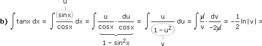 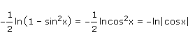
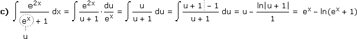
PBZ: QUADRATISCHE NENNER ZUR POTENZ
Bei der Partialbruchzerlegung stoßen wir auch auf folgende Summanden, die ein quadratisches, im Rellen nicht faktorisierbares Polynom enthalten:
Ax + B
(x2 + bx + c)n
Um diesen Term zu integrieren, gehen wir wie im Skriptum vor (Aufgabe 5) und erhalten:
C + D
u
(u2 + 1)n
1
(u2 + 1)n
Die Integration des ersten Teils ist klar, beim zweiten gehen wir so vor:
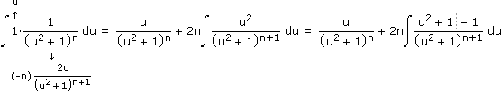
Das schaut jetzt nach einer Verschlechterung aus, aber wenn wir den letzen Teil abspalten und freistellen, erhalten wir die Rekursionsformel:
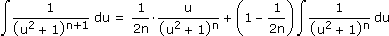
ERGÄNZUNG ZU AUFGABE 5:
Bei einem quadratischen Nenner, der nicht in reelle Linearfaktoren zerfällt, kann man auch die komplexen Linearfaktoren zur Partialbruchzerlegung nützen (was aber keinen Vorteil gegenüber der im Skriptum verwendeten Methode bringt):
Aufgabe: dx = (*)
x – 9
x2 – 2x + 5
x2 – 2x + 5 = 0
 x1,2 =
x1,2 = 2 ± √(–2)2 – 4·5
2
 1 + 2j1 – 2j
1 + 2j1 – 2jx – 9
x2 – 2x + 5
A + jB
x – 1 – 2j
C + jD
x – 1 + 2j
(A + jB)(x – 1 + 2j) + (C + jD)(x – 1 – 2j)
(x – 1 – 2j)(x – 1 + 2j)
x = 1 + 2j: –8 + 2j = (A + jB)4j = –4B + j4A
A = 0,5, B = 2x = 1 – 2j: –8 – 2j = (C + jD)(–4j) = 4D – j4C
C = 0,5, D = –2Für x
 gilt somit:
gilt somit:
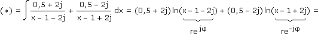
(0,5 + 2j)(lnr + jφ) + (0,5 – 2j)(lnr – jφ) = lnr – 4φ = ln√(x – 1)2 + 4 – 4arctan
-2
x – 1
Bem: Durch konstante Summanden kommen wir auf dasselbe Ergebnis wie im Skriptum (das keine Unstetigkeitsstelle bei x = 1 hat).
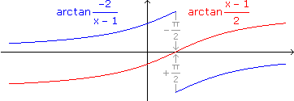
GEWICHTETES ARITHMETISCHES MITTEL
Im Skriptum haben wir die lineare Interpolation als Beispiel strapaziert, hier ein weiteres:
Aufgabe: Ein Blechstück liegt in der xy-Ebene und besteht aus zwei Teilen. Die Flächeninhalte der Teile und ihre Schwerpunkte sind gegeben. Zeige, dass der Gesamtschwerpunkt das flächenmäßig gewichtete Mittel der Teilschwerpunkte ist.
Wir unterstellen, dass das Blechstück die Dichte σ (in kg/m2) hat und die Schwerkraft normal auf die xy-Ebene wirkt. Genaugenommen wirkt die Schwerkraft auf die einzelnen Partikel, aber bei starren Körpern können wir so tun, als ob ihre Summe im Schwerpunkt angreift. Bezüglich einer Schwerelinie als Drehachse heben sich die durch die Schwerkraft erzeugten Drehmomente auf:
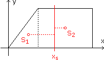
(xs – x1)A1σg = (x2 – xs)A2σg
xsA1 + xsA2 = x1A1 + x2A2
xs =
x1A1 + x2A2
A1 + A2
BEWEIS: SIMPSON'SCHE REGEL
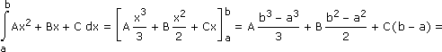
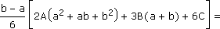
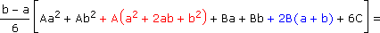
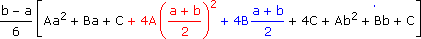
Bem: Für Polynome 3. Grades lässt sich die Regel genauso beweisen, für Polynome höheren Grades gilt sie nicht mehr.
KEPLER'SCHE FASSREGEL?
Die Fläche zwischen f(x) und 0 ≤ x ≤ h rotiere um die x-Achse. Der entstehende Drehkörper hat bei x die Querschnittsfläche Q(x) und das Volumen
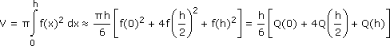